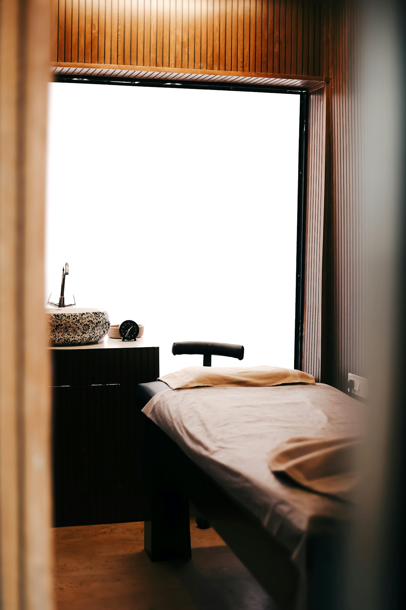
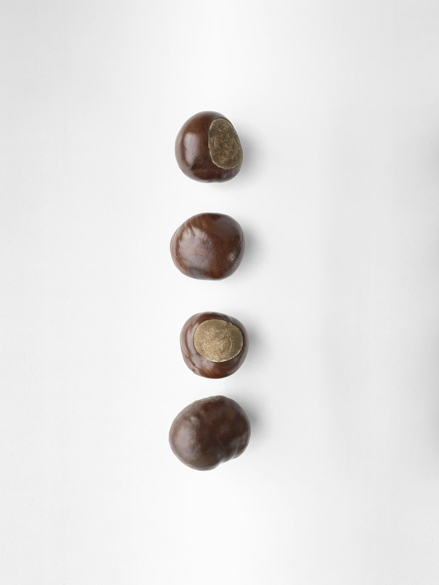
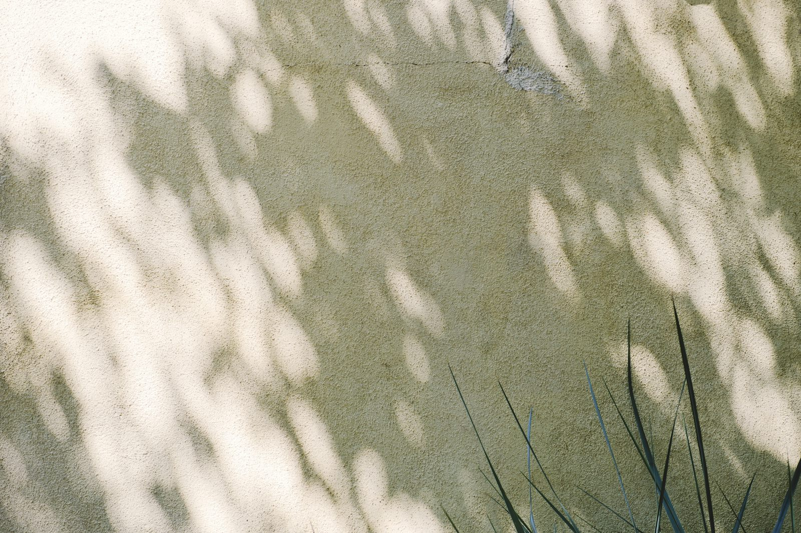
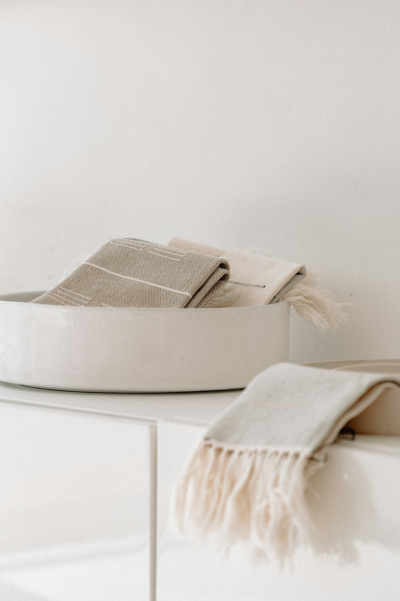

로빈테크 디자인 샘플 · 상호와 정보는 가상입니다
피부의 얇은 결까지,
천천히 살펴봅니다
보늬피부과는 피부과 전문의가 직접 진찰하고 상담하는 작은 의원입니다. 시술은 진단과 설명이 끝난 뒤에 함께 정합니다.
- 평일
- 10:00 – 19:00
- 수요일
- 10:00 – 21:00 야간 진료
- 토요일
- 10:00 – 15:00
- 휴진
- 일요일 · 공휴일


보늬, 밤의 속껍질
‘보늬’는 밤이나 도토리의 속껍질을 부르는 순우리말입니다. 단단한 겉껍질 안에서 알맹이를 감싸는 얇은 막처럼, 피부를 조심스럽게 다루고 싶어 지은 이름입니다.
진료 안내
시술 결과와 부작용은 개인에 따라 다를 수 있으며, 진료 상담 후 결정합니다.
-
여드름 압출과 약물 치료
염증의 정도를 보고 압출, 바르는 약과 먹는 약, 진정 관리 가운데 필요한 방법을 정합니다.
-
기미 · 색소 레이저 토닝
색소의 깊이와 종류를 확인한 뒤 레이저 시술의 횟수와 간격을 상담합니다.
-
홍조 혈관 레이저
얼굴이 쉽게 붉어지는 원인을 살피고, 혈관 레이저와 생활 속 관리를 함께 안내합니다.
-
점 · 사마귀 제거 시술
모양과 크기를 확인하고, 필요하면 조직 검사를 먼저 말씀드립니다.
-
습진 · 아토피 피부염 진료
가려움과 붉은 기의 원인을 찾고 약 처방과 보습 방법을 설명합니다.
-
모공 · 흉터 프랙셔널 레이저
흉터의 모양과 깊이를 보고 레이저 종류와 시술 간격을 상담합니다.

보늬의 진료 원칙
- 진단이 먼저입니다피부 상태를 확인하고 원인을 설명한 다음 시술을 이야기합니다.
- 필요한 만큼만지금 피부에 맞는 진료를 한 가지씩 상담합니다.
- 비용은 미리시술 전에 횟수와 전체 비용을 알려 드립니다.
의료진
-
서지안 대표원장 (가상 인물)
피부과 전문의
여드름, 색소, 홍조 진료
-
문하린 원장 (가상 인물)
피부과 전문의
습진, 아토피, 점 · 사마귀 진료
진료시간
- 월 · 화 · 목 · 금
- 10:00 – 19:00
- 수요일
- 10:00 – 21:00 야간 진료
- 토요일
- 10:00 – 15:00 점심시간 없음
- 점심시간
- 13:00 – 14:00
- 휴진
- 일요일 · 공휴일
시술은 예약제로 진행합니다. 일반 진료는 예약 없이 오셔도 되며, 접수는 마감 30분 전까지 받습니다.

오시는 길
서울 종로구 보늬길 21, 4층 (가상 주소)
- 지하철
- 보늬역(가상) 1번 출구에서 걸어서 4분
- 주차
- 건물 주차장 이용 가능 · 엘리베이터로 4층
- 문의
- 02-000-0000